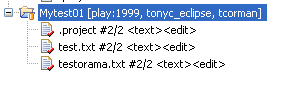

To ensure that you have up-to-date project files, right-click the project and choose Team > Get Latest Revision, then right-click the project and choose Team > Check Out.
You can also open files or an entire project by dragging from the Navigator to a changelist in the Perforce perspective's P4 Pending Changelists view.
To verify that the project files are checked out, look at the project in the Package Explorer view. The files are displayed as shown in the following figure (note the red checkmark decorators).

To retrieve a project that is stored in the Perforce depot but not on your machine, you must import it. To configure Eclipse to automatically open a file for edit when you change it (that is, when you start typing in the file or paste something into it), enable the Enable support for Workbench edit, delete, rename and refactoring operations preference. See Setting Preferences for details.